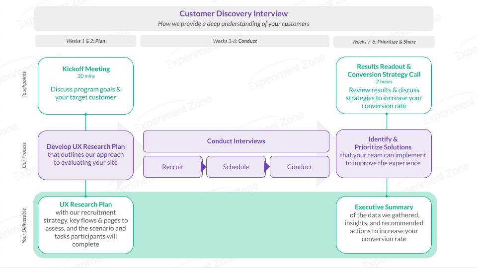

Our Simple and Seamless Process
In 6-8 weeks, we’ll provide a deep analysis of your target customer,
so you can uncover their needs, pain points, and experiences.

Step 1 | Kickoff (Week 1)
In this 60 min call, we'll make sure we understand your goals with this
Customer Discovery program. We'll discuss what you know about your current
and target customers, and what new markets you are exploring. We'll
also discuss expectations & set up our collaboration with your other partners.
Step 2 | Research Plan (Week 2)
During this step, we'll define the UX Research plan for
the survey and interviews. This step includes:
- Defining the recruitment strategy and screening questions
- Identifying the key questions for the interviews and survey
Step 3 | Conducting Survey and Interview Research (Week 3-6)
During this step, our research team will conduct the recruitment,
reach out to respondents, and collect survey responses.
In parallel, we will also conduct qualitative interviews with prospective customers.
We’ll conduct the recruitment, schedule the participants, and run the interviews.
As we gather insights, we’ll begin our full analysis of the data from the survey and
interviews. Once we understand the biggest problems and opportunities in the experience,
our Conversion Strategist will prioritize identifying specific solutions your team can do
to reach your target audience and deliver solutions that address their needs.
Step 4 | Results Readout + Strategy Call
During this 2-hour call, we will review the Customer Discovery Executive Summary. This
report includes a detailed user persona and corresponding customer journey map. You'll
get the data we gather, insights, and recommended actions to understand your new target
customer and key A/B testing opportunities to improve conversion rates.